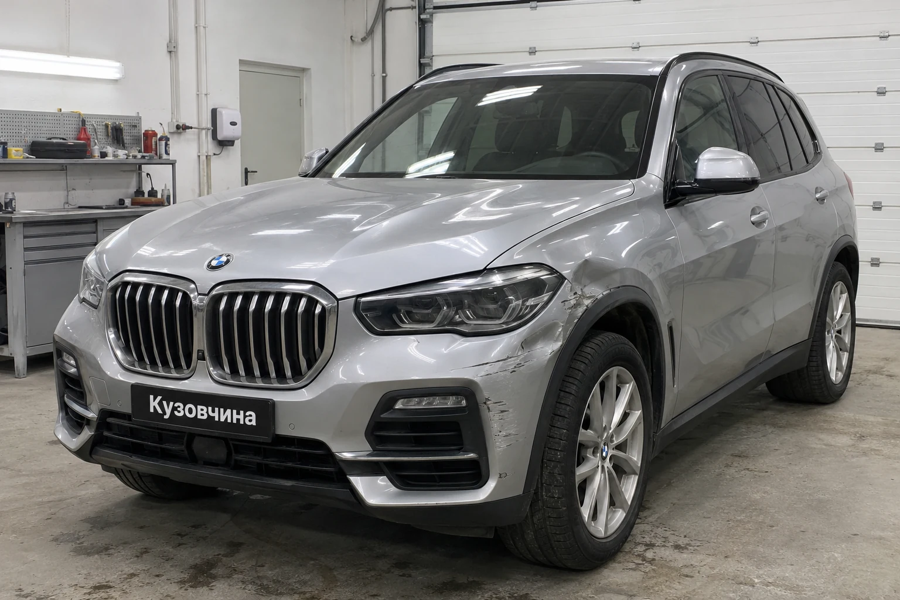
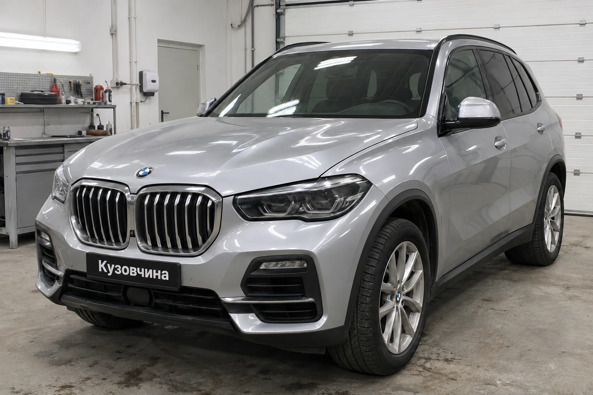
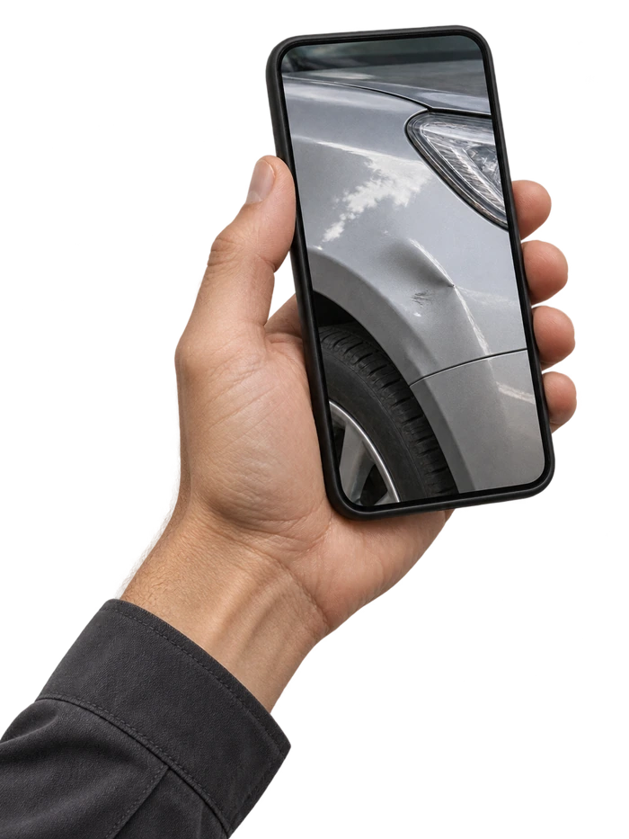
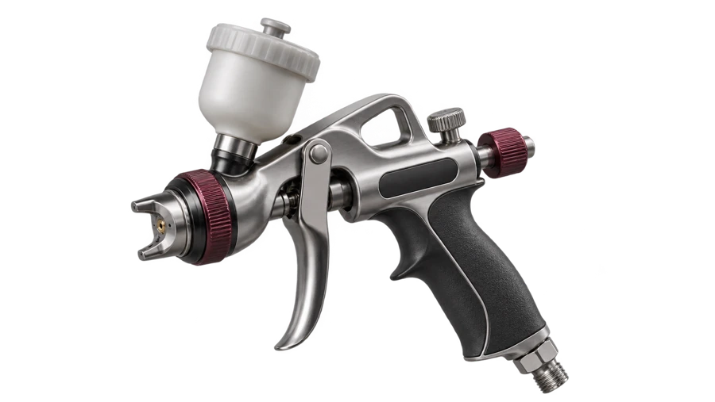
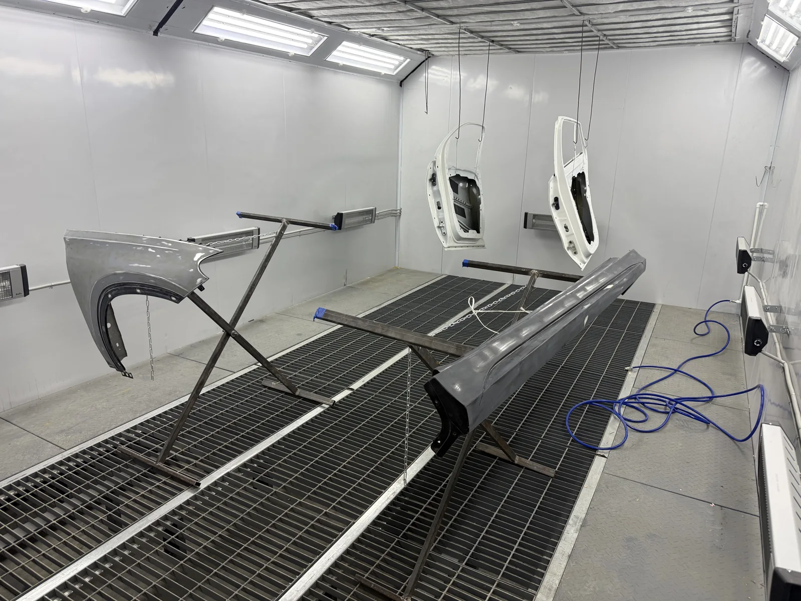
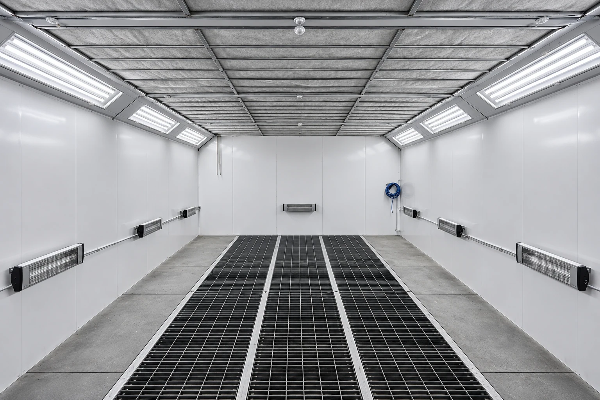
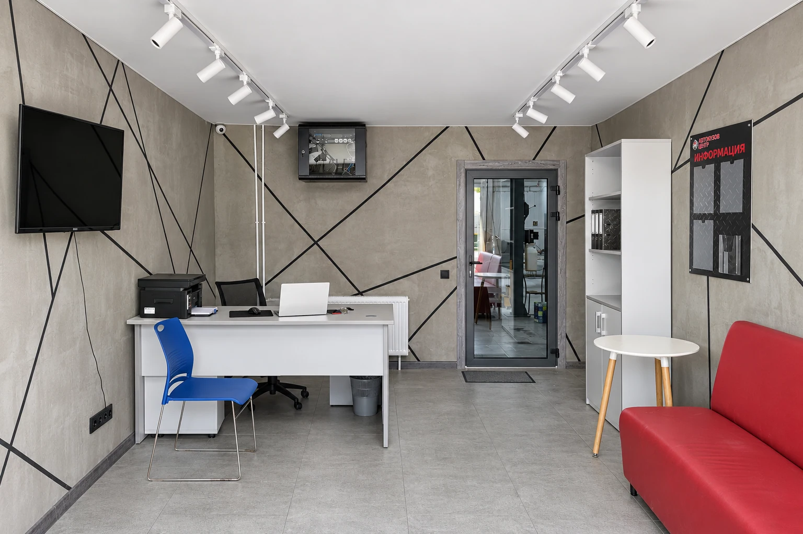
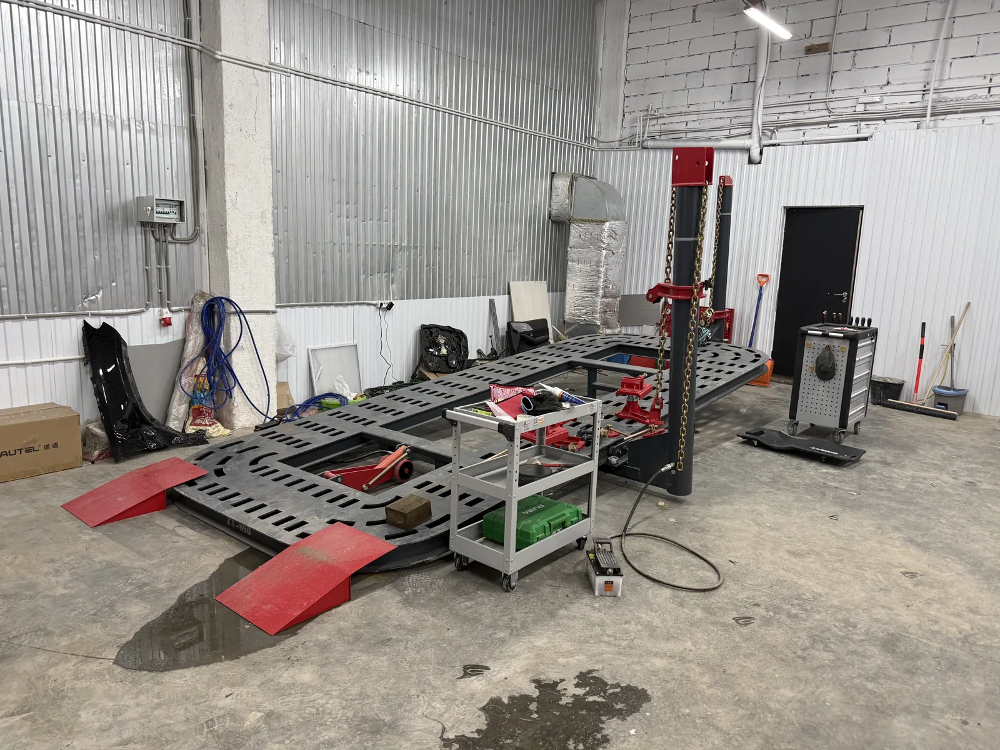
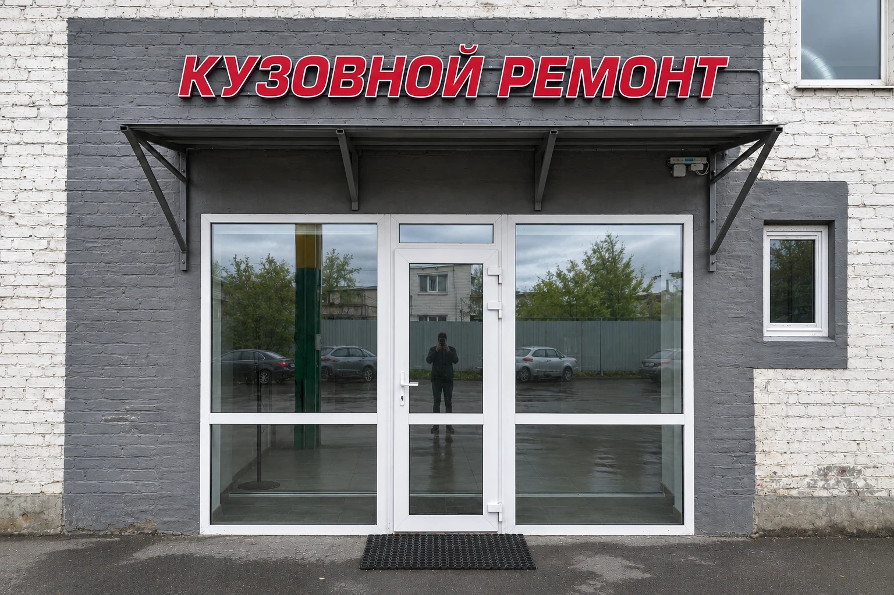

Визуализация · BMW X5До ремонтаОдин ракурс — два состояния
Пример восстановления крыла и покраски бампера BMW X5
Сгенерированная демонстрация, не клиентский кейс
Пермь · Кузовной сервис
От отдельной детали до восстановления после ДТП. Пришлите фото повреждений — обсудим работы
Оценить ремонт по фотоОбсудим повреждения и подберём работы для вашего автомобиля
Покажите повреждения
Обсудим предварительную стоимость

Согласуем состав работ
Разберём каждый этап ремонта

Покраска отдельных деталей и всего автомобиля. Выберите нужный вид работ
Базовые цены на покраску. Рихтовка, сварка, устранение коррозии и дополнительные материалы согласовываются отдельно до начала работ
Кузовной ремонт после ДТП · Ремонт бамперов, дверей, крыльев и порогов · Сварочные работы · Восстановление геометрии · Подготовка к покраске · Полировка
Оценить повреждения по фото ↗Посмотрите базовую стоимость покраски
Несколько элементов рассчитаем индивидуально
Реальные фотографии мастерской. Подготовка деталей и покраска в камере




Визуализация · BMW X5До ремонтаПример восстановления крыла и покраски бампера BMW X5
Сгенерированная демонстрация, не клиентский кейс
Собственная мастерская на улице Василия Васильева, 37. Здесь принимаем автомобили, восстанавливаем кузов и красим детали


около 600 м² производственной площади
собственные покрасочные камеры
восстановление геометрии кузова
для работы с автомобилем
От фотографий повреждений до приёмки автомобиля. Стоимость и сроки согласуем перед ремонтом
Обсудим формат поэтапного отчёта при приёме автомобиля. Здесь — пример того, какие этапы можно в него включить
Пример состава отчёта. Порядок связи и фотографии согласуем для вашего ремонта

Повреждения, перечень работ, стоимость и сроки. Согласуем всё перед ремонтом
Для компаний и автопарков
Кузовной ремонт и покраска для компаний с собственным автопарком, таксопарков, автосалонов и других автосервисов
Обсудим объём работ, порядок согласования и сроки для ваших автомобилей
Тестовые отзывы для макета. Все имена и ситуации вымышлены
Реальные впечатления
Скоро в этом разделе
Нужны подробности?
Напишите мастерской
Пермь, ул. Василия Васильева, 37
Позвоните перед визитом — согласуем время осмотра
